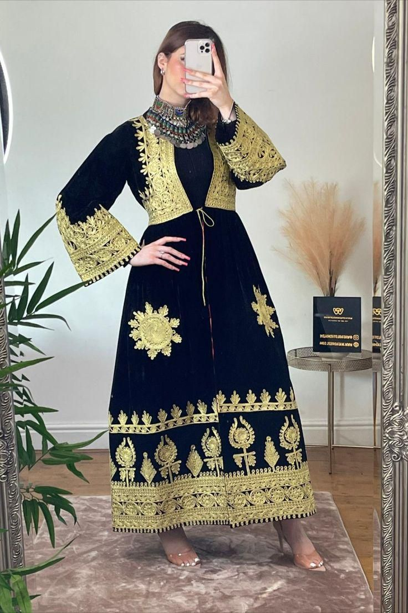

Herati Attire
Originating from Herat, these dresses feature intricate embroidery and vibrant colors. They are often worn during celebrations and cultural events.
Hazaragi Dresses
Bamyan is known for its bold, colorful fabrics and delicate hand-stitched patterns. Each piece reflects local identity and traditional artistry.